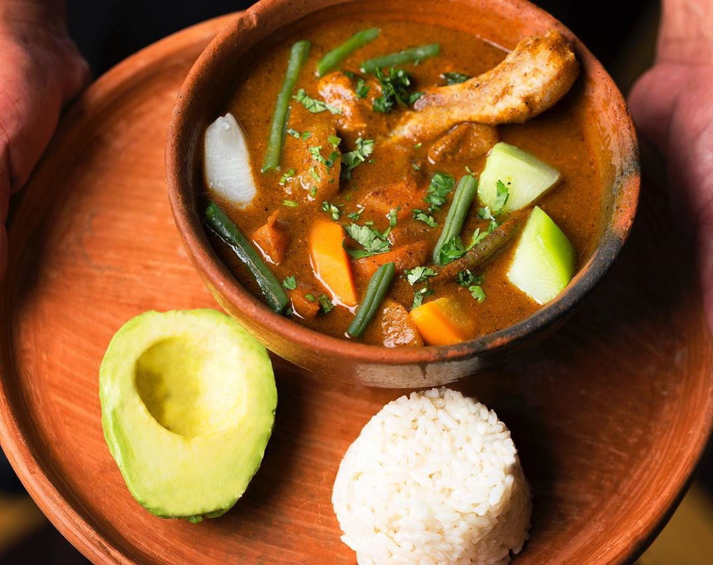

Pepián

El Pepián guatemalteco es un guiso acompañado de carne de res, cerdo, pollo o una mezcla de los tres. Es propio del departamento de Chimaltenango y es un recado de origen kaqchikel que se sirve en bodas, celebraciones, festividades y hasta en entierros. Fué declarado Patrimonio Cultural Intangible de la Nación por el Ministerio de Cultura y Deportes, en el 2007. Te presentamos la receta heredada por Mirciny Moliviatis de su abuelita "Chave".
Ingredientes
- 1 libra Carne de Res o Pollo
- 1 Chile Guaque
- 1 Chile Pasa
- 1 Chile Pimiento
- 4 Tomates
- 4 Miltomate
- 1 Cebolla
- 0.25 taza Pepitoria
- 0.25 taza Ajonjolí
- 2 Ajo (dientes)
- 1 Cilantro
- 1 Tortilla
- 1 litro Caldo
- 1 Sal
- 1 Pimienta
Preparación
- Colocar en una olla la variedad de carnes al gusto y agregar 1 litro de agua para cocer a fuego lento por 15 minutos.
- Agregue las verduras para su cocimiento en la misma olla y cocinar por 10 minutos.
- En un comal, poner a dorar los chiles, tomate, miltomate, cebolla, ajonjolí, pepitoria, dientes de ajo, la canela y la cáscara de plátano.
- Agregar los ingredientes del comal a la licuadora, agregar 1/4 de litro del caldo donde se ha cocido la carne y luego de licuar, hervir y espesar ese caldo por 30 minutos.
- Agregar la carne y las verduras y cocinar a fuego lento por 15 minutos.
- Servir al gusto con arroz blanco.